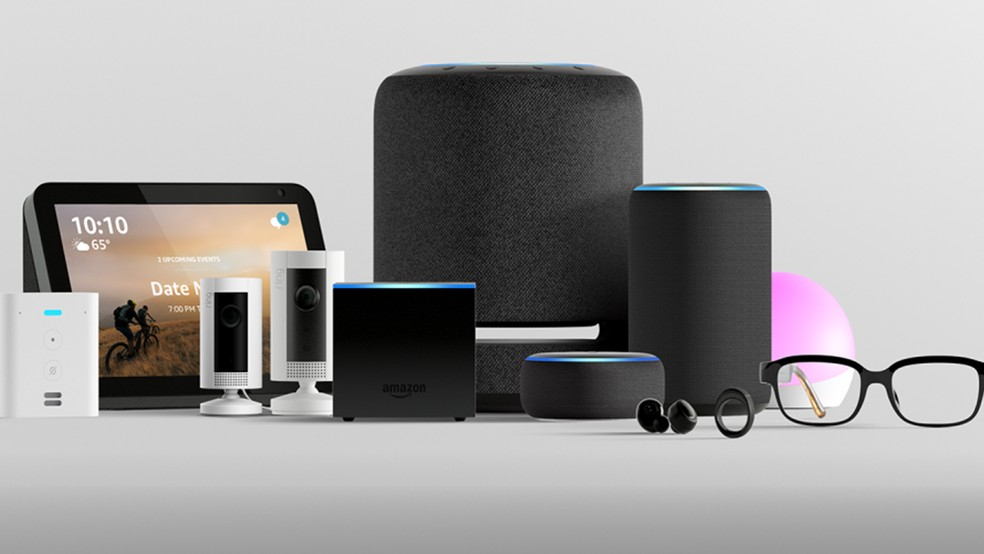

Um singelo comércio online
Tudo começa em 5 de julho de 1994, em Seattle, nos Estados Unidos. O fundador da Amazon é Jeff Bezos, um empresário e engenheiro que antes trabalhava como analista em Wall Street. Observando o mercado ainda novo da internet, ele resolveu abrir o próprio negócio.
Mas Amazon não foi o primeiro nome: ela foi registrada como Cadabra, porque seria algo mágico. Mas um advogado de Jeff Bezos sugeriu que ele mudasse, porque a palavra soava muito parecida com "cadáver". Ele também pensou em Relentless, que significa "implacável", mas o nome também foi desaconselhado por alguns amigos. A inspiração do nome que foi oficializado é o Rio Amazonas, considerado o maior do mundo em extensão e em fluxo de água por vazão. A ideia é que a loja também fosse a líder no que fizesse.
Bezos começou a Amazon com a esposa MacKenzie na própria garagem, que nem outras grandes companhias de tecnologia. O casal não sabia qual produto vender entre CDs, peças de computador, softwares e livros, e escolheu a última opção. Os motivos vão desde preço baixo até o vasto catálogo disponível de obras para todos os gostos.
Naquela época, os pedidos eram feitos todos online, o que já era uma grande novidade. E ela também não tinha um estoque limitado por um armazém. Ela conseguia manter um catálogo imenso de livros por causa de parcerias com atacadistas e distribuidoras. Então, a Amazon sempre tinha o livro que você queria e o entregava o mais rápido possível.
Dando resultados
O site começou um ano depois, com o modelo de negócios estruturado e o site pronto. "Conceitos de Fluidos e Analogias Criativas”, de Douglas Hofstadter, foi o primeiro livro vendido na história da Amazon. Ele é uma obra acadêmica até meio obscura, com ensaios sobre temas como inteligência artificial.
E o primeiro logotipo da Amazon era muito anos 90. Ele usava textos em azul e vermelho em fontes bem diferentes sobre um fundo com efeitos de água. O “A” estilizado durou até os anos 2000. Já o logotipo atual tem uma seta amarela bem característica que lembra um sorriso e indica que o site vende de tudo, de A a Z.
Fazer o site nascer já bem estruturado mesmo levando 1 ano para abrir as portas foi essencial para segurar esse sucesso inicial e continuar crescendo. Logo, a Amazon começou a incomodar as grandes livrarias dos Estados Unidos, como a Barnes & Noble.
No primeiro mês de funcionamento, a Amazon já recebeu pedidos de todos os 50 estados dos EUA, além de 45 países ao redor do globo. Em 97, ela faz a oferta pública de ações já mostrando números bem impressionantes. Naquele ano, já eram mais de 2,5 milhões de livros no catálogo e 148 milhões de dólares em vendas.
A empresa volta e meia apresentava números negativos nos relatórios trimestrais e o CEO avisou que ela demoraria pelo menos cinco anos até dar algum tipo de lucro. O motivo? Ele se preocupava mais em fortalecer a marca, criar infraestrutura para os negócios e crescer, em vez de só acumular ganhos. O primeiro saldo positivo só veio no finalzinho de 2001.
O boom do livro digital
O Kindle, que é o eReader mais famoso do mercado, começou a ser planejado ainda em 2004 sob o codinome Fiona. O nome significa "acender um fogo" e, segundo quem bolou a ideia, tem a ver com o estímulo intelectual da leitura.
O lançamento em 2007 foi um estouro. O primeiro modelo tinha um teclado físico e não era touchscreen, mas já trazia uma tela de e-ink de 6 polegadas. O estoque dele só durou 5 meses. Mais tarde, o Kindle DX com tela de 9,7 polegadas foi apresentado, mas não fez tanto sucesso.
Claro que os eBooks não iriam roubar o mercado dos livros físicos, mas criaram um hábito inteiro que é de comprar livros digitais e ler em qualquer lugar. Usar a interface da loja da Amazon, que já era famosa e tem aquela perigosa compra com um botão, era vitória na certa. A empresa criou um segmento de mercado e continua forte nele até hoje, especialmente para quem gosta de ler em formato digital, mas não em tablets convencionais.
O Touch finalmente ganhou o suporte aos toques na tela, o Paperwhite trouxe retroluminação com LEDs e o Voyage trazia a tela e-ink de melhor qualidade até o ano de 2014. O mais recente e oitavo Kindle é o Oasis, levíssimo e com um formato assimétrico pra ficar mais confortável ao ser segurado com uma só mão.
Novos planos
A Amazon também tem alguns projetos bem ambiciosos em fase de testes ou com lançamento limitado. É possível destacar o sistema Prime Air (para entrega de encomendas com drones) e também a mercearia Amazon GO, que não tem qualquer atendente humano e você faz as compras só tirando os produtos da prateleira e saindo pela porta. E tem ainda o Amazon Dash, uma série de pequenos aparelhos que servem para você adquirir mais unidades de um produto sem precisar acessar a loja.
O mais novo eletrônico é o Echo, um alto-falante que serve para controlar dispositivos da sua casa e ainda serve como assistente pessoal usando a Alexa, atual grande rival de Siri e Cortana. Versões com tela e para uso direcionado para o vestuário também já foram lançados, e o sucesso foi muito maior do que a Amazon esperava.
A jogada atual mais recente da empresa foi a compra da WholeFoods, uma rede de supermercados dos Estados Unidos. Ela é considerada de alto padrão e foca em produtos orgânicos ou naturais.
A Amazon verde e amarela
E temos que contar a breve mas já impactante história da Amazon no Brasil. Antes, era possível comprar pelo site gringo e pagar os impostos salgados e a taxa de importação, mas o Amazon.com.br entrou no ar à meia-noite de 6 de dezembro de 2012. De início, só eram vendidos eBooks e o leitor Kindle mais básico, mas logo já dava para comprar obras físicas. No fim de 2014, o modelo de assinatura para leitores Kindle Unlimited foi oficialmente apresentado.
Mas nem todo mundo ficou feliz com a chegada da Amazon no Brasil. Várias livrarias não curtiram a rival e lutam para diminuir essa agressividade nas promoções, inclusive com uma lei que limita descontos em lançamentos.
Apesar de focar só em livros, ela foi lançando novidades aos poucos. Em dezembro de 2016, estreou o serviço de streaming do Amazon Video. Já em maio de 2017, a empresa finalmente adicionou o Marketplace para brasileiros.